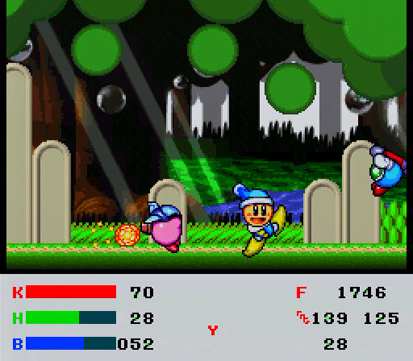

Kirby Super Star Practice Hack
A ROM hack for KSS to streamline speedrun practice. This hack is intended for JP v1.0.
You will need LunarIPS and a ROM file to apply the patch.
This hack is currently in "beta", and will be officially complete once I finish the list of features I would like to have done in "Features Checklist" (or when I am satisfied or tired of working on it).
Majority of this hack has been done by Nippo. Contact me if you would like to report a bug.
If you are using an FxPak and are experiencing large lag spikes, put these files in your sd2snes folder (if your flashcart revision is old enough, you can alternatively use this firmware).

Downloads:
Latest (Stable) - Updated 9/28/2023
Latest
Changelog and Older Releases
Features list:
- Infinite lives
- Quick room reset with R + Y, then L
- Remove Helper instantly with R + Y, then Select
- Death animation removed
- Powers, Helper, and Wheelie Rider state are kept through death
- Instant 100% save file with Up + X on file select screen (selected file will be made 100%)
- Quick select abilities with R + A, then the following buttons:
- Up: Jet
- Right: Wheel
- Down: Hammer
- Left: Plasma
- Select: Remove ability
- Change respawn coordinates to current location with R + B, then L
- This code does not work when riding on Wheelie.
- Spring Breeze bosses always at New File HP
- GCO bosses always respawn
- RoMK timer always frozen
- RoMK chapter select
- RoMK dialogue cutscenes skippable by pressing Start
Bug: Skipping some cutscenes causes the music to not start properly.
- Use L and R to quick select planets in MWW
- All rooms have checkpoints
- Custom HUD:
- View specific HP values
- Input display
- Frame counter
- RNG values
- Jet / Plasma charge
Features Checklist:
- These are features that are yet to be added, but plan to be added in the future.
To be completed:
- Skip Goal Game cutscenes
- Dying in Arena does not cause a Game Over
- Speed up death animation when in shooting segment
- Music mute toggle (instead of having two separate patches)
- Advance and go back rooms
- Toggle treasures in GCO
- Toggle abilities in MWW
- Skip all RoMK cutscenes
- Add more abilities to be quick selectable (Stone, Wing, Cutter, etc.)
Stretch Goals:
- In-game timer which accounts for lag frames
- Crash handling, prevent complete data wipe on crash
- Faster world map movement in Dyna Blade
- Better room reset (rather than instantly killing Kirby, do a proper room reload)
- Pause menu with a robust amount of features:
- Power select
- Helper power select
- Adjust and freeze RNG
- Instantly load any room from any subgame
- If timer is implemented, possibly show best times for each stage
- Change Kirby's color (cosmetic)
- Add toggle for RoMK timer
- Toggle between custom and default HUD, customize colors in custom HUD
- Custom title screen graphic
GitHub
The GitHub repository for this project can be found here.
If you are interested in contributing, feel free to contact me.
Donations
If this hack has helped you in some way and you are interested in supporting me financially, donations are heavily appreciated.
Thank You
A list of those who have helped in some way with this project.
- GoldenEpsilon and TheJuice for helping with assembly and the hack itself.
- わみちゃん(wami), ぷーれさん(zzzhonki), and Zapplex for testing and bug-finding.
- IsoFrieze/RetroGameMechanicsExplained for their very useful SNES tutorials.